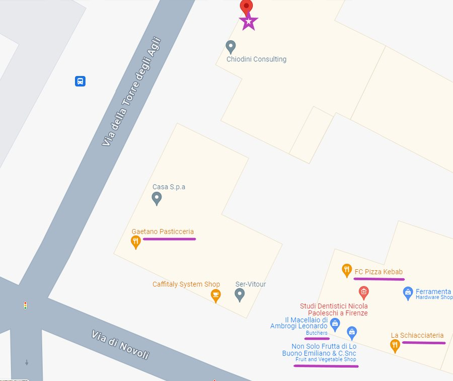
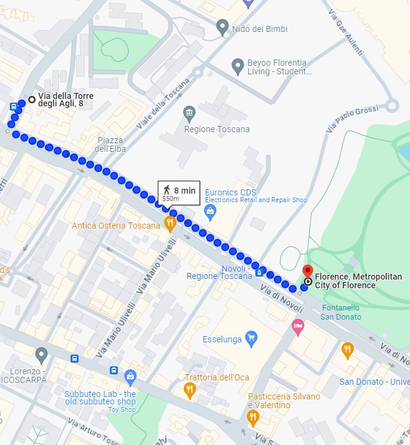
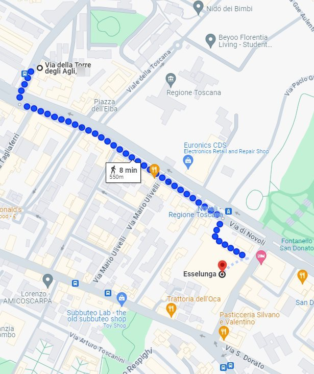
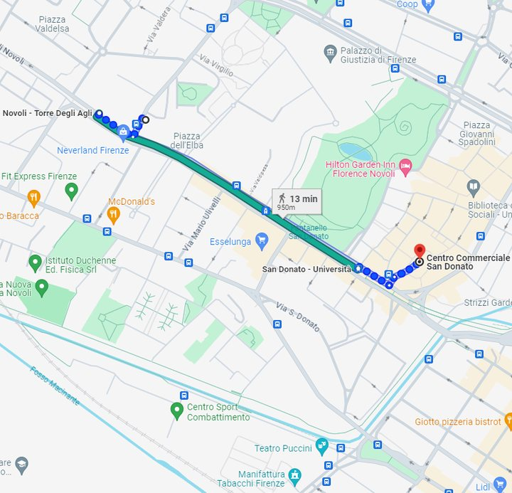
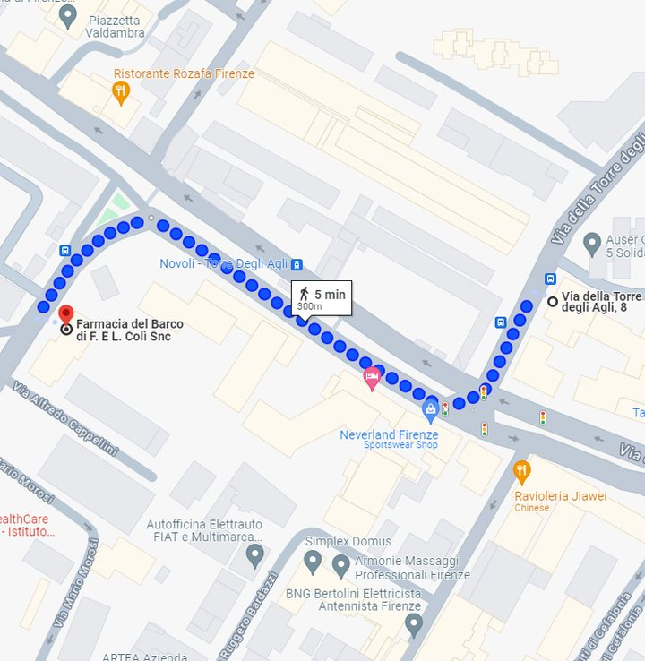
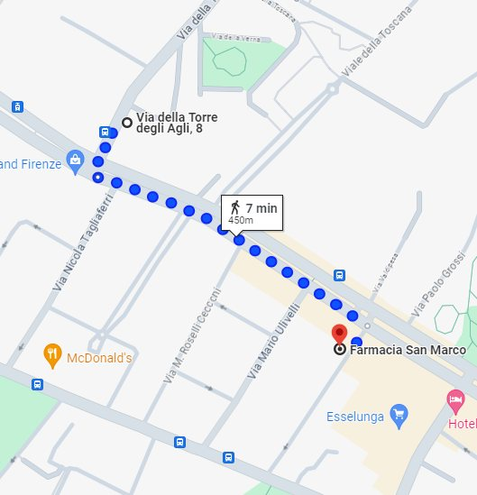
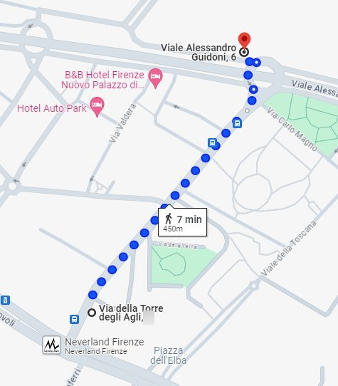
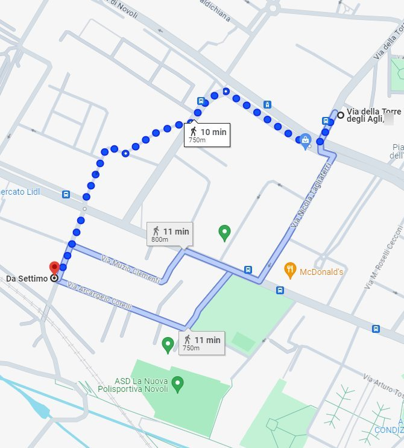

Neighbourhood and surroundings
The Novoli area is not in the bustling city centre, but it is a quiet, convenient base with a wide range of local services.
Around the corner
Enjoy breakfast at Pasticceria Gaetano, just a few metres downstairs; savour the freshly baked products of the bakery La Schiacciateria; and let the butcher Ambrogi tempt you with quality meat and tasty ready-to-cook preparations. A kebab shop, a small grocery store and a greengrocer complete the picture, right around the corner between Via della Torre degli Agli and Via di Novoli.
Nearby, also within walking distance, a renowned fish restaurant and a traditional street food truck for lampredotto and other sandwiches.

San Donato park
For a bit of greenery, San Donato Park is a 5-minute walk away: large open spaces, ideal for walks, jogging or simply sitting and enjoying a sunny day.

Esselunga supermarket
For bigger shopping, the Esselunga supermarket is an 8-minute walk away: well stocked for all your food needs, plus a wide selection of household products.

San Donato shopping centre
For some shopping, the San Donato shopping centre — with The Space cinema and the Virgin Active gym — is a 12-minute walk or 8 minutes by tram: shops, restaurants and entertainment for a pleasant day out.

Nearest pharmacies
Two pharmacies are a 5-minute walk away: over-the-counter medicines, personal care products and advice from qualified staff.


Street food truck
The street food truck known as "Il Trippaio" is a 7-minute walk away: authentic Florentine flavours such as the famous lampredotto, prepared and served fresh every day.

Antica Osteria Toscana restaurant
A stone’s throw from home, in Via di Novoli 73 (5-minute walk): authentic Tuscan cuisine with the typical meat dishes of the Florentine tradition — here you can taste the famous Florentine steak.
Antica Osteria Toscana website
Ristorante Settimo
A 10-minute walk away. In Florence since 1975, renowned for its seafood cuisine with top-quality ingredients and a welcoming atmosphere: perfect for a dinner of traditional Italian sea flavours after a day of exploring.

Quartiere e dintorni
La zona di Novoli non è nel vivace centro città, ma è una base tranquilla e comoda con un’ampia varietà di servizi.
Dietro l’angolo
Goditi la colazione alla Pasticceria Gaetano, a pochi metri sotto casa; assapora i prodotti appena sfornati del panificio La Schiacciateria; e lasciati tentare dalla carne di qualità e dalle preparazioni pronte da cuocere della macelleria Ambrogi. Un kebab, un piccolo alimentari e un fruttivendolo completano il quadro, proprio dietro l’angolo tra Via della Torre degli Agli e Via di Novoli.
Nelle vicinanze, sempre a piedi, anche un rinomato ristorante di pesce e un tradizionale camioncino di street food per lampredotto e altri panini.
Parco San Donato
Per un po’ di verde, il Parco San Donato è a 5 minuti a piedi: ampi spazi aperti, ideali per passeggiate, jogging o semplicemente per sedersi e godersi una giornata di sole.
Supermercato Esselunga
Per la spesa grossa, il supermercato Esselunga è a 8 minuti a piedi: ben fornito per tutte le necessità alimentari, oltre a un’ampia scelta di prodotti per la casa.
Centro commerciale San Donato
Per un po’ di shopping, il Centro Commerciale San Donato — con il cinema The Space e la palestra Virgin Active — è a 12 minuti a piedi o 8 minuti in tram: negozi, ristoranti e svago per una piacevole giornata.
Farmacie più vicine
Due farmacie a 5 minuti a piedi: farmaci da banco, prodotti per la cura della persona e consigli di personale qualificato.
Tripperia street food
Il camioncino detto "Il Trippaio" è a 7 minuti a piedi: i sapori autentici della tradizione fiorentina, come il famoso lampredotto, preparato e servito fresco ogni giorno.
Ristorante Antica Osteria Toscana
A due passi da casa, in Via di Novoli 73 (5 minuti a piedi): cucina toscana autentica con i piatti di carne tipici della tradizione fiorentina — qui puoi assaggiare la famosa bistecca alla fiorentina.
Sito dell’Antica Osteria Toscana
Ristorante Settimo
A 10 minuti a piedi. A Firenze dal 1975, rinomato per la cucina di pesce con ingredienti sempre di prim’ordine e un’atmosfera accogliente: perfetto per una cena dai sapori di mare della tradizione italiana dopo una giornata in giro.
Barrio y alrededores
La zona de Novoli no está en el animado centro de la ciudad, pero es una base tranquila y cómoda con una amplia variedad de servicios.
A la vuelta de la esquina
Disfruta del desayuno en la Pasticceria Gaetano, a pocos metros del portal; saborea los productos recién horneados de la panadería La Schiacciateria; y déjate tentar por la carne de calidad y las preparaciones listas para cocinar de la carnicería Ambrogi. Un kebab, una pequeña tienda de comestibles y una frutería completan el panorama, justo a la vuelta de la esquina entre Via della Torre degli Agli y Via di Novoli.
Cerca, también a pie, un reconocido restaurante de pescado y un tradicional puesto ambulante de lampredotto y otros bocadillos.
Parque San Donato
Para un poco de verde, el Parque San Donato está a 5 minutos a pie: amplios espacios abiertos, ideales para pasear, correr o simplemente sentarse y disfrutar de un día de sol.
Supermercado Esselunga
Para la compra grande, el supermercado Esselunga está a 8 minutos a pie: bien surtido para todas las necesidades alimentarias, además de una amplia selección de productos para el hogar.
Centro comercial San Donato
Para ir de compras, el Centro Comercial San Donato — con el cine The Space y el gimnasio Virgin Active — está a 12 minutos a pie u 8 minutos en tranvía: tiendas, restaurantes y ocio para pasar un buen día.
Farmacias más cercanas
Dos farmacias a 5 minutos a pie: medicamentos de venta libre, productos de cuidado personal y consejos de personal cualificado.
Puesto de comida callejera
El puesto ambulante conocido como "Il Trippaio" está a 7 minutos a pie: los sabores auténticos de la tradición florentina, como el famoso lampredotto, preparado y servido fresco cada día.
Restaurante Antica Osteria Toscana
A pocos pasos de casa, en Via di Novoli 73 (5 minutos a pie): auténtica cocina toscana con los platos de carne típicos de la tradición florentina — aquí puedes probar la famosa bistecca alla fiorentina.
Web de la Antica Osteria Toscana
Ristorante Settimo
A 10 minutos a pie. En Florencia desde 1975, famoso por su cocina de pescado y marisco con ingredientes siempre de primera calidad y un ambiente acogedor: perfecto para una cena con sabores del mar de la tradición italiana después de un día de exploración.
Le quartier et les environs
Le quartier de Novoli n’est pas dans le centre-ville animé, mais c’est une base tranquille et pratique avec un large choix de services.
Au coin de la rue
Prenez le petit-déjeuner à la Pasticceria Gaetano, à quelques mètres en bas de chez vous ; goûtez les produits tout juste sortis du four de la boulangerie La Schiacciateria ; et laissez-vous tenter par la viande de qualité et les préparations prêtes à cuire de la boucherie Ambrogi. Un kebab, une petite épicerie et un marchand de fruits et légumes complètent le tableau, juste au coin entre Via della Torre degli Agli et Via di Novoli.
À proximité, toujours à pied, un restaurant de poisson réputé et un camion de street food traditionnel pour le lampredotto et d’autres sandwichs.
Parc San Donato
Pour un peu de verdure, le Parc San Donato est à 5 minutes à pied : de grands espaces ouverts, idéaux pour se promener, courir ou simplement s’asseoir et profiter d’une journée ensoleillée.
Supermarché Esselunga
Pour les grosses courses, le supermarché Esselunga est à 8 minutes à pied : bien fourni pour tous les besoins alimentaires, avec aussi un large choix de produits pour la maison.
Centre commercial San Donato
Pour un peu de shopping, le Centre Commercial San Donato – avec le cinéma The Space et la salle de sport Virgin Active – est à 12 minutes à pied ou 8 minutes en tram : boutiques, restaurants et loisirs pour une agréable journée.
Pharmacies les plus proches
Deux pharmacies à 5 minutes à pied : médicaments sans ordonnance, produits de soin et conseils d’un personnel qualifié.
Triperie street food
Le camion appelé « Il Trippaio » est à 7 minutes à pied : les saveurs authentiques de la tradition florentine, comme le célèbre lampredotto, préparé et servi frais chaque jour.
Restaurant Antica Osteria Toscana
À deux pas de la maison, Via di Novoli 73 (5 minutes à pied) : cuisine toscane authentique avec les plats de viande typiques de la tradition florentine – ici vous pouvez goûter la célèbre bistecca alla fiorentina.
Site de l’Antica Osteria Toscana
Restaurant Settimo
À 10 minutes à pied. À Florence depuis 1975, réputé pour sa cuisine de poisson avec des ingrédients toujours de premier choix et une atmosphère accueillante : parfait pour un dîner aux saveurs de la mer de la tradition italienne après une journée de visites.